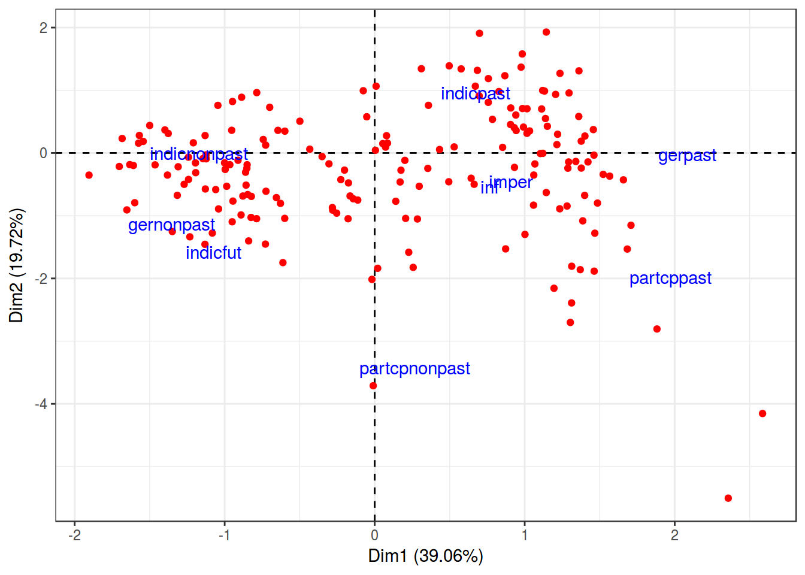

Lab14. CA and MCA.
# library(FactoMineR)
library(tidyverse)
library(ca)
library(vcd)
theme_set(theme_bw())Grammatical profiles of Russian verbs
In their article “Predicting Russian aspect by frequency across genres” Eckhoff et al. (2017) ask whether the aspect of individual verbs can be predicted based on the statistical distribution of their inflectional forms. The dataset contains a sample of sentences taken from the Russian National Corpus. Each verb was annotated by Mood&Tense, Voice, Aspect and other grammatical features.
ru <- read.csv('https://raw.githubusercontent.com/agricolamz/2018-MAG_R_course/master/data/RNCverbSamples_journ.csv', sep=';')
str(ru)## 'data.frame': 52716 obs. of 14 variables:
## $ FormTranslit : Factor w/ 18861 levels "absorbirujuschimi",..: 5396 6884 18667 9730 6683 8844 554 5159 11780 13299 ...
## $ LemmaTranslit: Factor w/ 5940 levels "absorbirovat'",..: 1718 2274 5887 3106 2210 2841 171 1633 3805 4229 ...
## $ MoodTense : Factor w/ 9 levels "gernonpast","gerpast",..: 6 6 6 6 6 5 8 7 7 8 ...
## $ Trans : Factor w/ 2 levels "intr","tran": 2 2 2 2 2 2 1 2 2 1 ...
## $ Voice : Factor w/ 4 levels "","act","med",..: 2 4 4 2 2 2 2 2 2 2 ...
## $ VoicePartcp : Factor w/ 3 levels "","act","pass": 1 3 3 1 1 1 2 1 1 2 ...
## $ Person : Factor w/ 4 levels "","1p","2p","3p": 1 1 1 1 1 4 1 1 1 1 ...
## $ Number : Factor w/ 3 levels "","pl","sg": 3 3 3 2 2 2 3 1 1 3 ...
## $ Gender : Factor w/ 4 levels "","f","m","n": 3 3 3 1 1 1 3 1 1 2 ...
## $ Long : Factor w/ 3 levels "","long","short": 1 3 3 1 1 1 2 1 1 2 ...
## $ AspPair : logi NA NA NA NA NA NA ...
## $ Aspect : Factor w/ 2 levels "i","p": 2 2 2 1 2 1 1 1 1 1 ...
## $ Mood : Factor w/ 5 levels "ger","imper",..: 3 3 3 3 3 3 5 4 4 5 ...
## $ Tense : Factor w/ 4 levels "","fut","nonpast",..: 4 4 4 4 4 3 3 1 1 3 ...First, we will do some preprocessing. Here, we join future passives with other passive participles.
ru$MoodTense[ru$Voice == 'pass' & ru$MoodTense == 'indicfut'] <- "partcppast"Let’s look at top-10 of verbs in the dataset
ru %>%
group_by(LemmaTranslit) %>%
summarize(count=n()) %>%
arrange(desc(count))1.1 Grammatical profiles
Grammatical profile is a vector that contains the number (or the ratio) of inflectional forms for individual lemmas. We can pick up a subset containing only forms of the verb chitat’ ‘read’.
ru.chit <- droplevels(subset(ru, LemmaTranslit == "chitat'"))This is the grammatical profile of chitat’
print("The grammatical profile of chitat'")## [1] "The grammatical profile of chitat'"print(table(ru.chit$MoodTense))##
## gernonpast imper indicfut indicnonpast indicpast
## 2 8 1 15 14
## inf
## 22print(prop.table(table(ru.chit$MoodTense))*100)##
## gernonpast imper indicfut indicnonpast indicpast
## 3.225806 12.903226 1.612903 24.193548 22.580645
## inf
## 35.483871Now we will calculate the grammatical profile of each verb (which has more than 50 occurrences in our data set) and split the resulting table into two parts: grammatical forms themselves (numeric data, see ttdata below) and metadata (categories labeled in the RNC or by annotators: lemma, trasitivity, aspect).
Table of tense-mood distribution per lemma:
tab = table(ru$LemmaTranslit,ru$MoodTense)
#turns the table into a data frame
t = as.data.frame.matrix(tab)
#adds lemmas as a separate column
t$LemmaTranslit = row.names(t)
#adds metadata columns for transitivity and aspect, assuming that these are stable per lemma - just picking the first value per lemma
t$Trans = as.factor(unlist(lapply(t$LemmaTranslit, function(x) names(table(droplevels(subset(ru, LemmaTranslit == x)$Trans)))[1])))
t$Asp = as.factor(unlist(lapply(t$LemmaTranslit, function(x) names(table(droplevels(subset(ru, LemmaTranslit == x)$Aspect)))[1])))Label the biaspectuals ‘b’:
levels(t$Asp) <- c('i','p','b')
t[t$LemmaTranslit=="ispol'zovat'",]$Asp <- 'b'
t[t$LemmaTranslit=="obeschat'",]$Asp <- 'b'Pick out the lemmas with 50 or more occurrences and split the data:
tt <- t[rowSums(t[,1:9]) >= 50,]1.2 t-SNE visualization (for numeric variables)
The idea behind this kind of visualisation is to plot different clusters as far from each other as possible (preserving the distance between each pair of clusters). Within each cluster, the points are distributed to show the internal structure of the cluster. Note that unlike PCA, in t-SNE the points’ coordinates cannot be interpreted directly (there is no linear mapping of one plane to another), and linear correlations can be misleading.
library(Rtsne)
ru.tsne <- Rtsne(tt[,1:9],
dims=2,
perplexity=50,
verbose=TRUE,
max_iter = 2000)## Read the 185 x 9 data matrix successfully!
## Using no_dims = 2, perplexity = 50.000000, and theta = 0.500000
## Computing input similarities...
## Normalizing input...
## Building tree...
## - point 0 of 185
## Done in 0.04 seconds (sparsity = 0.942001)!
## Learning embedding...
## Iteration 50: error is 45.103585 (50 iterations in 0.09 seconds)
## Iteration 100: error is 45.259187 (50 iterations in 0.09 seconds)
## Iteration 150: error is 45.154654 (50 iterations in 0.09 seconds)
## Iteration 200: error is 44.902553 (50 iterations in 0.10 seconds)
## Iteration 250: error is 44.364197 (50 iterations in 0.11 seconds)
## Iteration 300: error is 0.329208 (50 iterations in 0.07 seconds)
## Iteration 350: error is 0.165567 (50 iterations in 0.07 seconds)
## Iteration 400: error is 0.161704 (50 iterations in 0.07 seconds)
## Iteration 450: error is 0.160413 (50 iterations in 0.07 seconds)
## Iteration 500: error is 0.162643 (50 iterations in 0.07 seconds)
## Iteration 550: error is 0.162891 (50 iterations in 0.08 seconds)
## Iteration 600: error is 0.162998 (50 iterations in 0.08 seconds)
## Iteration 650: error is 0.162448 (50 iterations in 0.08 seconds)
## Iteration 700: error is 0.162124 (50 iterations in 0.08 seconds)
## Iteration 750: error is 0.163056 (50 iterations in 0.08 seconds)
## Iteration 800: error is 0.162575 (50 iterations in 0.08 seconds)
## Iteration 850: error is 0.162013 (50 iterations in 0.08 seconds)
## Iteration 900: error is 0.162588 (50 iterations in 0.08 seconds)
## Iteration 950: error is 0.162645 (50 iterations in 0.08 seconds)
## Iteration 1000: error is 0.162639 (50 iterations in 0.08 seconds)
## Iteration 1050: error is 0.162181 (50 iterations in 0.07 seconds)
## Iteration 1100: error is 0.162030 (50 iterations in 0.08 seconds)
## Iteration 1150: error is 0.162368 (50 iterations in 0.08 seconds)
## Iteration 1200: error is 0.162724 (50 iterations in 0.08 seconds)
## Iteration 1250: error is 0.162950 (50 iterations in 0.08 seconds)
## Iteration 1300: error is 0.161981 (50 iterations in 0.08 seconds)
## Iteration 1350: error is 0.162835 (50 iterations in 0.08 seconds)
## Iteration 1400: error is 0.162646 (50 iterations in 0.08 seconds)
## Iteration 1450: error is 0.162595 (50 iterations in 0.08 seconds)
## Iteration 1500: error is 0.162511 (50 iterations in 0.08 seconds)
## Iteration 1550: error is 0.162497 (50 iterations in 0.08 seconds)
## Iteration 1600: error is 0.162852 (50 iterations in 0.08 seconds)
## Iteration 1650: error is 0.162829 (50 iterations in 0.08 seconds)
## Iteration 1700: error is 0.162482 (50 iterations in 0.08 seconds)
## Iteration 1750: error is 0.162825 (50 iterations in 0.08 seconds)
## Iteration 1800: error is 0.163031 (50 iterations in 0.08 seconds)
## Iteration 1850: error is 0.162657 (50 iterations in 0.08 seconds)
## Iteration 1900: error is 0.162253 (50 iterations in 0.08 seconds)
## Iteration 1950: error is 0.162370 (50 iterations in 0.08 seconds)
## Iteration 2000: error is 0.161973 (50 iterations in 0.08 seconds)
## Fitting performed in 3.12 seconds.tt <- cbind(tt, ru.tsne$Y)
tt %>%
ggplot(aes(`1`, `2`, label = Asp, color = Asp))+
geom_text()CA
tt_ca <- ca(tt[,1:9])
tt_col <- data.frame(tt_ca$colcoord)
tt_col$rows <- rownames(tt_ca$colcoord)
tt_row <- data.frame(tt_ca$rowcoord)
tt_row$rows <- rownames(tt_ca$rowcoord)
tt_col %>%
ggplot(aes(Dim1, Dim2))+
geom_hline(yintercept = 0, linetype = 2)+
geom_vline(xintercept = 0,linetype = 2)+
geom_point(data = tt_row, aes(Dim1, Dim2), color = "red")+
geom_text(aes(label = rows), color = "blue")+
labs(x = "Dim1 (39.06%)",
y = "Dim2 (19.72%)")
MCA
Dataset and description from paper by Natalia Levshina. Modern standard Dutch has two periphrastic causatives with the infinitive: the constructions with doen ‘do’ and laten ‘let’. The study is based on an 8-million token corpus of Netherlandic and Belgian Dutch. After the manual cleaning, there were left with 6,808 observations, which were then coded for seven semantic, syntactic, geographical and thematic variables.
- Aux — a factor that specifies the causative auxiliary with levels laten and doen.
- Country — a factor with levels NL (the Netherlands) and BE (Belgium).
- Causation — a factor that describes the type of causation with levels Affective, Inducive, Physical and Volitional
- EPTrans — a factor that specifies the transitivity of the Effected Predicate with levels Intr (intransitive) and Tr (transitive).
- EPTrans1 — a factor with levels Intr and Tr. It is very similar to the previous one, except for a few observations.
dutch_caus <- read.csv("https://goo.gl/2yAR3T")
MCA <- MASS::mca(dutch_caus[,-1])
MCA## Call:
## MASS::mca(df = dutch_caus[, -1])
##
## Multiple correspondence analysis of 500 cases of 7 factors
##
## Correlations 0.577 0.458 cumulative % explained 9.62 17.25dutch_caus <- cbind(dutch_caus, MCA$rs)
variables <- as_data_frame(MCA$cs)
variables$var_names <- rownames(MCA$cs)
dutch_caus %>%
ggplot(aes(`1`, `2`))+
geom_point(aes(color = Aux))+
stat_ellipse(aes(color = Aux))+
geom_text(data = variables, aes(`1`, `2`, label = var_names))+
theme_bw()+
scale_x_continuous(limits = c(-0.015, 0.02))